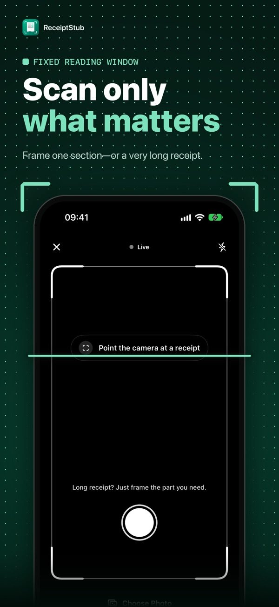
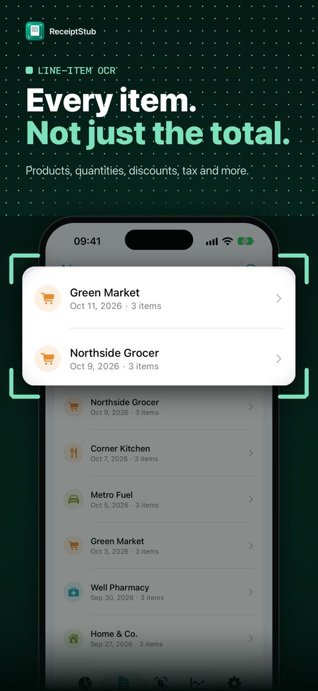
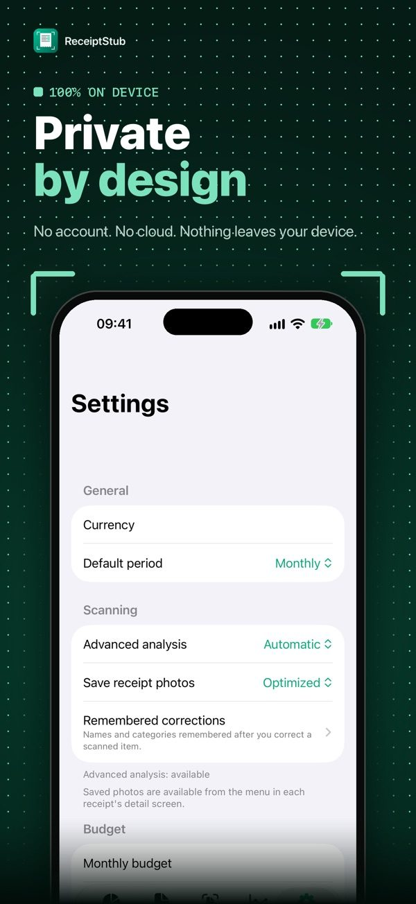
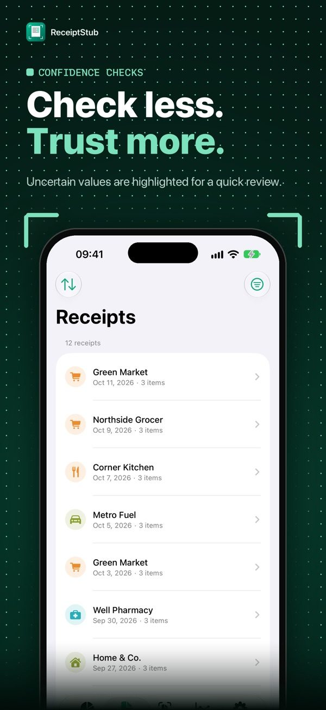
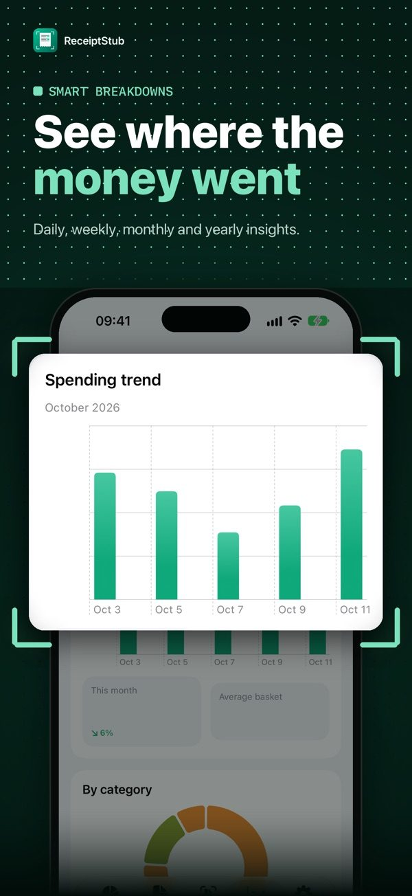
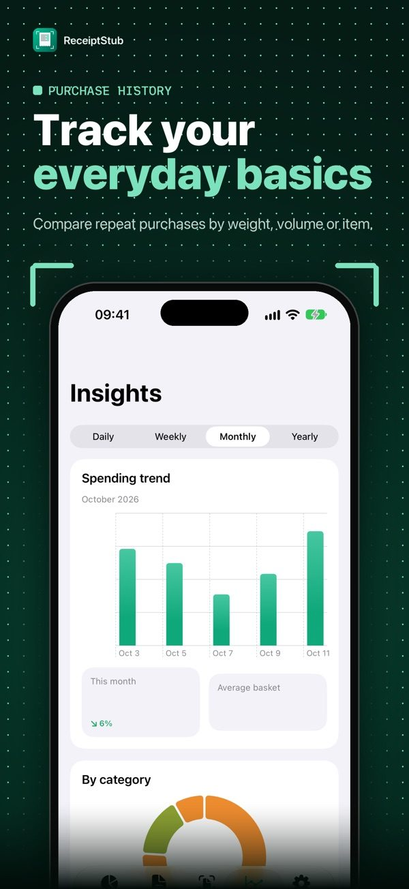
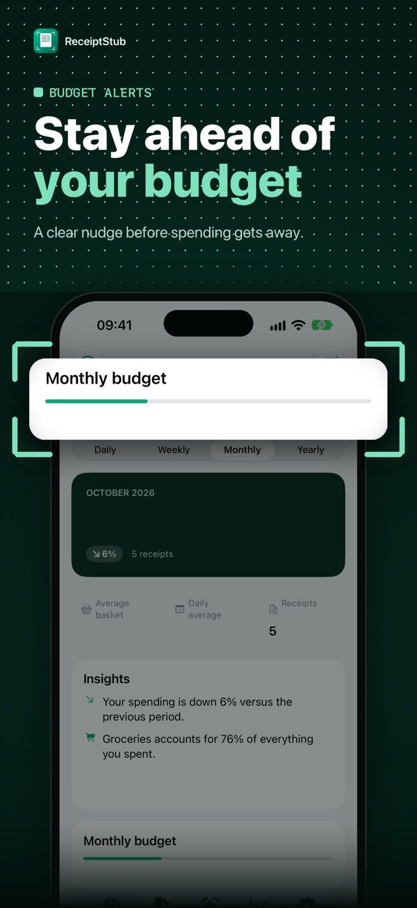
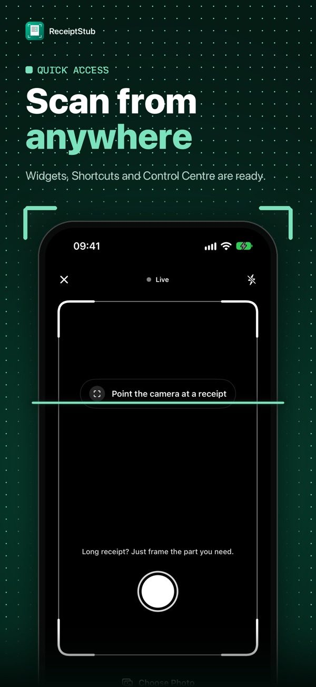
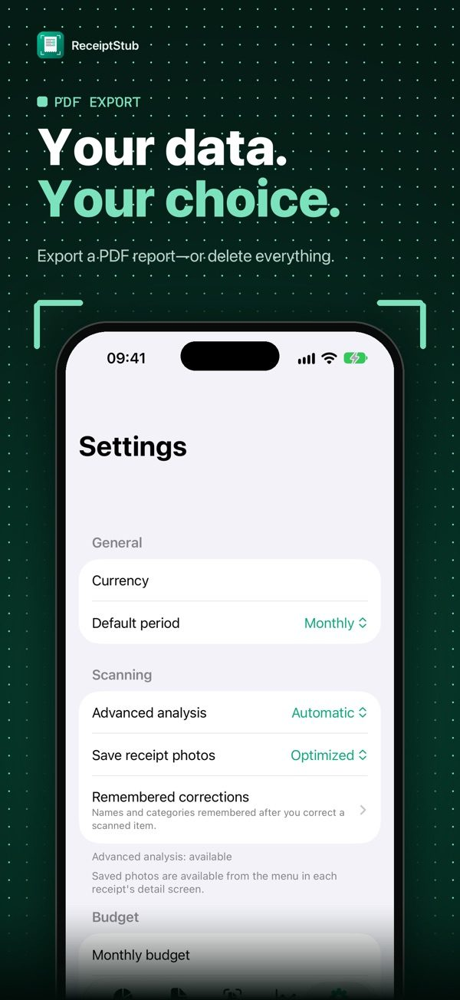
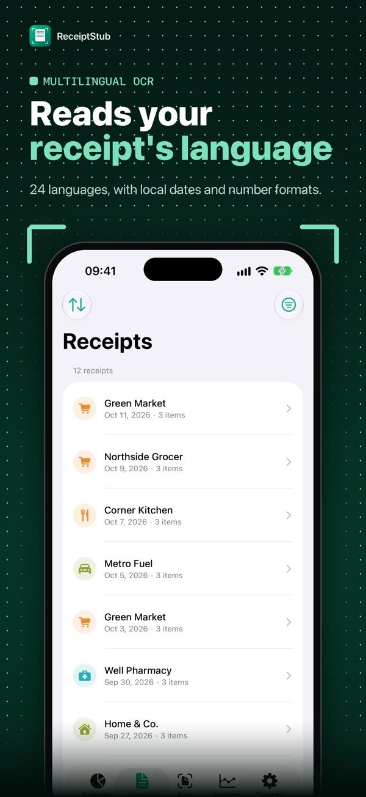

Önemli kısmı tara
Sabit okuma penceresini uzun fişin istediğin bölümüne getir. Uygulama; yaklaşman, sabit tutman veya yansımayı azaltman için anlık yönlendirir.
Fişin tamamını kadraja sığdırmaya çalışma. Önemli bölümü göster; ReceiptStub her satırı cihazında okusun, düzenlesin ve hatırlasın.
Şu an Türkiye App Store'unda listelenmiyor.

Ekran görüntüleri










Fişten anlamlı kayda
Sabit okuma penceresini uzun fişin istediğin bölümüne getir. Uygulama; yaklaşman, sabit tutman veya yansımayı azaltman için anlık yönlendirir.
Ürünleri, miktarları, birim fiyatları, indirimleri, vergiyi ve toplamı ayırır; emin olmadığı alanları kontrol etmen için işaretler.
Aynı ürünü yeniden taradığında fiyat değişimini zaman içinde karşılaştır. Tüm kayıtlar iPhone'unda kalır; hesap, bulut ve internet gerekmez.
Tarama, düzenleme ve satın alımı geri yükleme hakkında yardım al.
Desteğe git →Fişlerin ve yerel kayıtların nasıl korunduğunu öğren.
Politikayı oku →